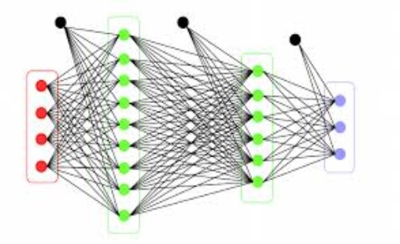
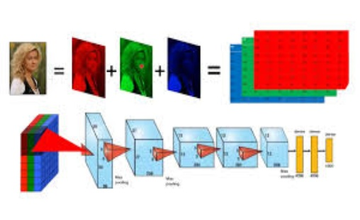
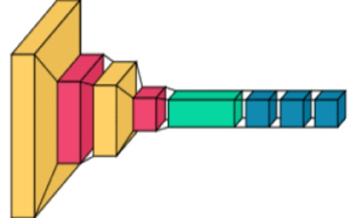
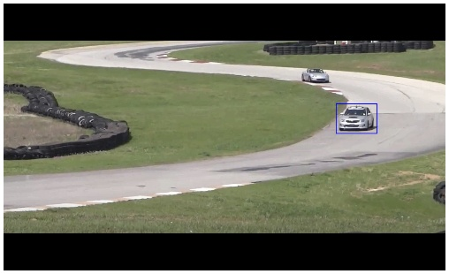

This project aims to revolutionize traffic light management at an urban intersection using a Deep Q-Learning reinforced learning agent. By simulating traffic flow with the SUMO (Simulation of Urban Mobility) tool, the main objective is to optimize vehicle travel times by minimizing their waiting time.
This Python code demonstrates a basic Q-learning agent for Tic-Tac-Toe. The agent gradually improves its gameplay by updating a Q-table based on the received rewards after each strategic move.
This project uses the FrozenLake-v1 environment from OpenAI Gym to create a Q-learning agent. The goal is to train the agent to navigate a frozen lake, avoiding holes and reaching the goal.
This project uses Django to create an interactive story experience where users' decisions shape the narrative. Django's robust framework, along with its admin interface, offers a powerful platform for managing story nodes and user choices. The application dynamically updates content on the same page, providing a seamless and engaging user interaction within the story.
The project is an interactive story web application built using Flask. It allows users to navigate through a branching narrative by making choices that influence the storyline. Flask's lightweight framework facilitates rapid development and easy customization of the story structure, making it suitable for building dynamic web applications with minimal overhead.
üåø AlexNet is a groundbreaking CNN that popularized deep learning in computer vision. It has been adapted in this project to classify plant leaves. AlexNet features five convolutional layers, followed by three fully connected layers, with ReLU activation and dropout for regularization. This architecture enables the model to capture a wide range of features in leaf images, from basic shapes to more complex patterns. AlexNet's relatively deep architecture, combined with its use of dropout, makes it robust and capable of handling large, diverse datasets.

üçÇ ResNet, or Residual Network, is a highly advanced CNN that addresses the challenges of training deep networks by introducing residual connections. In the context of leaf classification, ResNet's deep architecture allows it to capture very detailed features, distinguishing between similar-looking leaves from different species. The residual connections help maintain the flow of information across layers, making ResNet particularly effective for complex image classification tasks where fine-grained features are crucial for accurate predictions.
üçÅ DenseNet, or Densely Connected Convolutional Network, introduces dense connections, where each layer receives inputs from preceding layers, promoting feature reuse and improving gradient flow. This structure enables DenseNet to build detailed feature maps, making it effective for classifying images with subtle variations, such as different types of leaves. DenseNet's ability to capture and combine features from various depths in the network allows for more accurate classification of plant species compared to traditional models.

üçÉ VGGNet is a deeper convolutional neural network designed to handle more complex image classification tasks. In this project, VGGNet has been adapted to classify plant leaves with high precision. The model features multiple blocks of convolutional layers with small 3x3 filters, followed by pooling layers, which help in capturing intricate details in leaf images. This deep architecture allows VGGNet to extract hierarchical features, making it highly effective for distinguishing between different plant species.

üå± LeNet is a pioneering convolutional neural network (CNN) originally designed for digit recognition but adapted here for classifying plant leaves. It consists of a series of convolutional and pooling layers that progressively extract essential features from leaf images. These features are then flattened and passed through fully connected layers to predict the leaf's class. LeNet is known for its simplicity and efficiency, making it suitable for small-scale image classification tasks where computational resources are limited.

TensorFlow and PyTorch both use tensors, which generalize vectors and matrices to multiple dimensions. TensorFlow tensors are immutable and operate with static computation graphs for differentiation. PyTorch tensors are dynamic and mutable, simplifying computation and debugging with its dynamic computation graph. Both frameworks support GPU operations, offering extensive APIs for efficient data processing and model training, including creation, indexing, and mathematical operations.
This Flask application lets users upload PDF, DOCX, or TXT files and automatically generates a summary using models from the Hugging Face transformers library.

This Flask application lets users upload PDF, DOCX, or TXT files and automatically generates a summary using models from the Hugging Face transformers library.